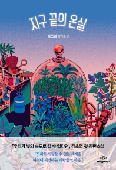

해지는 저녁, 하나 둘 불을 밝히는 노란 창문과 우산처럼 드리운 식물들. 허공을 채우는 푸른빛의 먼지, 지구의 끝도 우주의 끝도 아닌 단지 어느 숲속의 유리 온실. 그리고 그곳에서 밤이 깊도록 유리벽 사이를 오갔을 어떤 온기 어린 이야기들을.
이 소설을 쓰며 우리가 이미 깊이 개입해버린, 되돌릴 수 없는, 그러나 우리가 앞으로 계속 살아가야하는 이곳 지구를 생각했다. 도저히 사랑할 수 없는 세계를 마주하면서도 마침내 그것을 재건하기로 결심하는 사람들엑 대해서도. 아마도 나는, 그 마음에 대한 이야기를 쓰고 싶었던 것 같다.